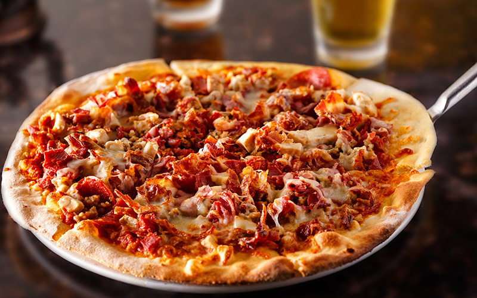

Meatfeast Pizza

Description
Because everybody needs a cheat meal. I won't tell anyone if you don't!
Now pizza night is a classic, whether its for the big game, a gaming session, or just because;
we've got you covered with the best classic meatfeast recipe going
Ingredients
- 1/2 C water
- 1/2 tsp active dry yeast
- 1/4 tsp granulated sugar
- 1 1/4 C all purpose flour
- 3/4 tsp salt
- 1 Tbsp olive oil, if needed
- 1/3-1/2 C Pizza sauce
- 1 1/2 C mozzarella
- 3 Tbsp Parmesan cheese
- 3-4 slices bacon, cooked and chopped
- 1/2 C ham, roughly chopped
- 1/2 C hot sausage, cooked and crumbled
- 1/4 C pepperoni slices
- Ground Black Pepper
Steps by step guide
- Prepare dough by combining warm water, heated to 115°F,
with yeast and sugar. Stir to dissolve and allow to proof
- In the bowl of a stand mixer, add flour and salt. With mixer running on low,
slowly add yeast mixture. Increase speed, adding olive oil, if needed or desired. Mix until
a ball forms, pulling away from the sides of the bowl. Transfer to a greased bowl
. Cover and allow to rise in a warm location until doubled, roughly 1 hour.
- Meanwhile, cook bacon and sausage. Chop bacon and ham. Crumble sausage.
- Preheat oven to 425°F.
- Grease a baking sheet with olive oil. Shape
dough to desired size. Spoon pizza sauce over dough.
Sprinkle with Parmesan cheese and 1/2 cup shredded whole milk mozzarella.
Add meat toppings. Finally sprinkle with remaining
1 cup mozzarella and ground black pepper.
- Bake for 15-20 minutes or until desired crispness is reached. Serve warm.